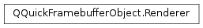

QQuickFramebufferObject.Renderer¶
Synopsis¶
Functions¶
- def
framebufferObject() - def
invalidateFramebufferObject() - def
update()
Virtual functions¶
- def
createFramebufferObject(size) - def
render() - def
synchronize(arg__1)
Detailed Description¶
TheQQuickFramebufferObject.Rendererclass is used to implement the rendering logic of aPySide2.QtQuick.QQuickFramebufferObject.
-
class
PySide2.QtQuick.QQuickFramebufferObject.Renderer¶ Constructs a new renderer.
This function is called during the scene graph sync phase when the GUI thread is blocked.
-
PySide2.QtQuick.QQuickFramebufferObject.Renderer.createFramebufferObject(size)¶ Parameters: size – PySide2.QtCore.QSizeReturn type: PySide2.QtGui.QOpenGLFramebufferObjectThis function is called when a new FBO is needed. This happens on the initial frame. If
QQuickFramebufferObject.textureFollowsItemSizeis set to true, it is called again every time the dimensions of the item changes.The returned FBO can have any attachment. If the
PySide2.QtGui.QOpenGLFramebufferObjectFormatindicates that the FBO should be multisampled, the internal implementation of the Renderer will allocate a second FBO and blit the multisampled FBO into the FBO used to display the texture.Note
Some hardware has issues with small FBO sizes.
sizetakes that into account, so be cautious when overriding the size with a fixed size. A minimal size of 64x64 should always work.Note
sizetakes the device pixel ratio into account, meaning that it is already multiplied by the correct scale factor. When moving the window containing thePySide2.QtQuick.QQuickFramebufferObjectitem to a screen with different settings, the FBO is automatically recreated and this function is invoked with the correct size.
-
PySide2.QtQuick.QQuickFramebufferObject.Renderer.framebufferObject()¶ Return type: PySide2.QtGui.QOpenGLFramebufferObjectReturns the framebuffer object currently being rendered to.
-
PySide2.QtQuick.QQuickFramebufferObject.Renderer.invalidateFramebufferObject()¶ Call this function during
PySide2.QtQuick.QQuickFramebufferObject::Renderer.synchronize()to invalidate the current FBO. This will result in a new FBO being created withPySide2.QtQuick.QQuickFramebufferObject::Renderer.createFramebufferObject().
-
PySide2.QtQuick.QQuickFramebufferObject.Renderer.render()¶ This function is called when the FBO should be rendered into. The framebuffer is bound at this point and the
glViewporthas been set up to match the FBO size.The FBO will be automatically unbound after the function returns.
Note
Do not assume that the OpenGL state is all set to the defaults when this function is invoked, or that it is maintained between calls. Both the Qt Quick renderer and the custom rendering code uses the same OpenGL context. This means that the state might have been modified by Quick before invoking this function.
Note
It is recommended to call
QQuickWindow.resetOpenGLState()before returning. This resets OpenGL state used by the Qt Quick renderer and thus avoids interference from the state changes made by the rendering code in this function.
-
PySide2.QtQuick.QQuickFramebufferObject.Renderer.synchronize(arg__1)¶ Parameters: arg__1 – PySide2.QtQuick.QQuickFramebufferObjectThis function is called as a result of
QQuickFramebufferObject.update().Use this function to update the renderer with changes that have occurred in the item.
itemis the item that instantiated this renderer. The function is called once before the FBO is created.For instance, if the item has a color property which is controlled by QML, one should call
QQuickFramebufferObject.update()and use to copy the new color into the renderer so that it can be used to render the next frame.This function is the only place when it is safe for the renderer and the item to read and write each others members.
-
PySide2.QtQuick.QQuickFramebufferObject.Renderer.update()¶ Call this function when the FBO should be rendered again.
This function can be called from
PySide2.QtQuick.QQuickFramebufferObject::Renderer.render()to force the FBO to be rendered again before the next frame.Note
This function should be used from inside the renderer. To update the item on the GUI thread, use
QQuickFramebufferObject.update().
© 2018 The Qt Company Ltd. Documentation contributions included herein are the copyrights of their respective owners. The documentation provided herein is licensed under the terms of the GNU Free Documentation License version 1.3 as published by the Free Software Foundation. Qt and respective logos are trademarks of The Qt Company Ltd. in Finland and/or other countries worldwide. All other trademarks are property of their respective owners.